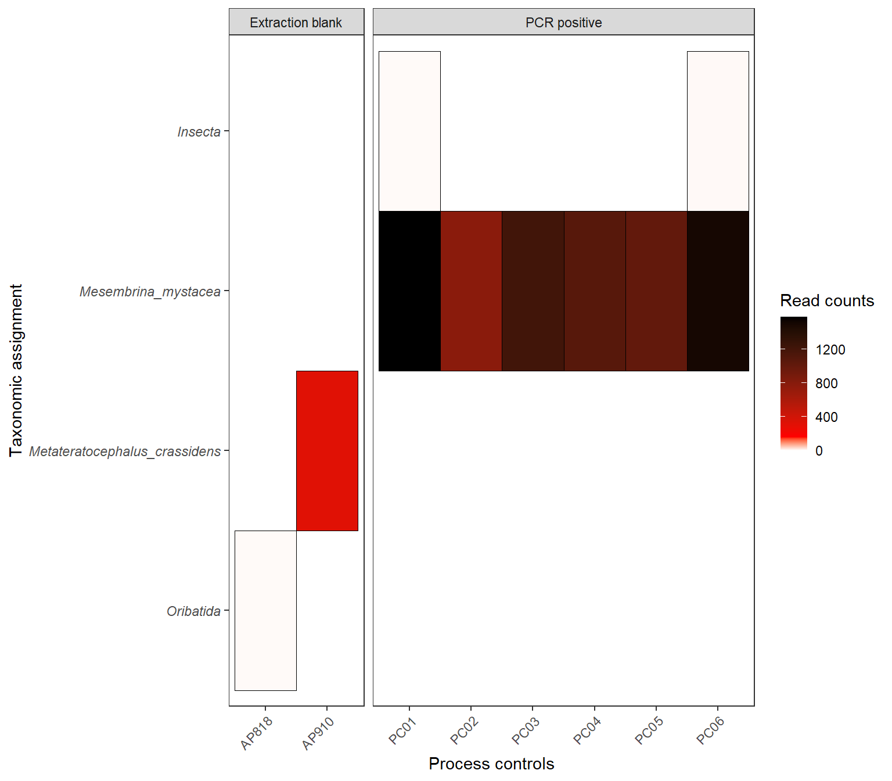
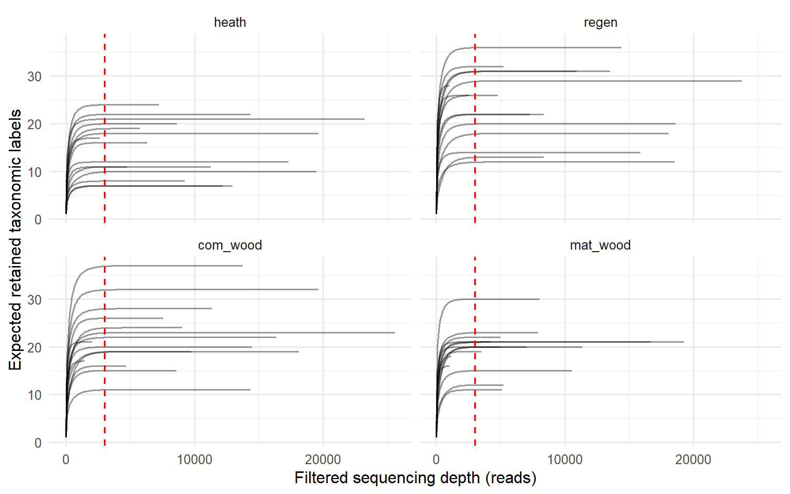
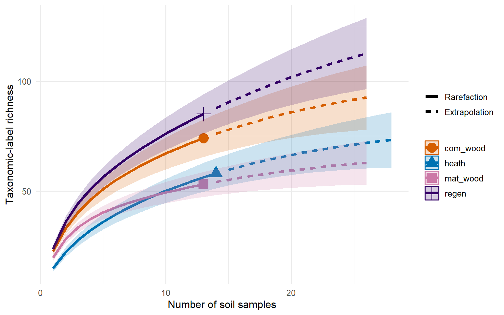

We show you in this tutorial
In this session, we will go through the checks and steps you must do
to have a working and interpretable dataset.
We will achieve this by:
- Join read data to their assigned taxonomic units.
- Check laboratory controls for potential sources of
contamination.
- Apply filters to remove contamination, and other weak-signal
data.
- Prepare community matrices alongside the associated metadata.
- Explore sequencing depth and species accumulation over effort.
Here, we will use the example of an 18S dataset targeting metazoan
invertebrates in a Scottish landscape and across four habitat types,
heath, regen, commercial woodland, and mature woodland.
1. Prepare the working environment
To work with this code, you may either copy the code chunks directly
to your own script, or download the .Rmd files associated to this
repository. You can return to the repository with the link on the top
right of the navigation bar.
First, we need to prepare our environment, by installing the packages
that contain the functions that we will use. It only needs doing
once.
install.packages(
c("here", "tidyverse", "janitor", "vegan", "iNEXT")
)
After installing, we load them into the session, this needs doing
every time we open R. You may need to adjust file paths to the source of
your files, if you are not working out of a cloned repository.
library(here)
library(tidyverse)
library(janitor)
library(vegan)
library(iNEXT)
# Declare this document's location relative to the project root.
here::i_am("session0.Rmd")
Analysis settings
We declare a few values in advance, as it makes it easier to explore
how different filtering decisions affect the results. These include the
confidence thresholds for taxonomic assignments and other relevant
values.
The values below reproduce the thresholds in the original workflow.
They are choices for this dataset rather than universal defaults.
tax_ranks <- c(
"species", "genus", "family", "order",
"class", "phylum", "kingdom"
)
habitat_levels <- c(
"heath", "regen", "com_wood", "mat_wood"
)
confidence_cutoff <- 0.7
relative_cutoff <- 0.001
min_reads <- 3000
positive_control_taxon <- "Mesembrina_mystacea"
data_dir <- here::here("data", "session0")
A 70% confidence cutoff is the recommendation by the designers of the
taxonomic classifier, called RDP naïve Bayesian
classifier. A 0.1% filter is also typically used in eDNA studies to
dismiss nuisance detections and focus on ecologically relevant data. A
few samples were further removed if they did not have at least 3,000
reads, supported by rarefaction analysis.
3. A Few Things to Consider
Mixed Taxonomy
An ASV may have a species assignment, a genus assignment, or only a
higher-rank assignment. Here, we use something called mixed taxonomy.
Rather than dropping higher level assignments, we treat them as if they
represented at least one other taxa.
asv_tax <- asv_tax %>%
mutate(
consensus_name = coalesce(
species, genus, family, order,
class, phylum, kingdom
)
)
This is why we typically refer to taxa, rather than species.
Fixing Mistakes
Mistakes are unavoidable. Here, the positive and negative control and
a sample got mixed up in the 96-well plate. This was obvious when
exploring the controls (below):
PC03 becomes AP845.NC03 becomes PC03.
To do this, we take the lab names from the asv_table, and rename them
to the right ID.
sample_key <- tibble(
lab_id_original = setdiff(names(asv_tab), "asv_id")
) %>%
mutate(lab_id = str_to_upper(lab_id_original))
sample_key <- sample_key %>%
mutate(
lab_id = case_when(
lab_id == "PC03" ~ "AP845",
lab_id == "NC03" ~ "PC03",
TRUE ~ lab_id
) )
Now that we have the right IDs, we can use the same table, to
separate a few things. Currently we have two types of samples. True
samples, and controls. Controls include extraction controls, positive
controls, and negative controls. - Extraction controls are tubes where
no sample is added, but where the same process and ragents are added as
if DNA was being extracted. They are used to monitor contamination
during the DNA extraction. - Positive controls are used at the library
preparation stage, and have all the reagents plus a known source of DNA.
Here we have used the DNA of a fly. It monitors whether lab stages are
working correctly. - Negative controls are also used during library
preparation. Like DNA extractions, they receive all the reagents, but no
DNA. It monitors contamination during library preparation.
sample_key <- sample_key %>%
# Attach field labels to distinguish extraction controls.
left_join(
lab_field_id,
by = "lab_id"
) %>%
mutate(
sample_type = case_when(
str_detect(lab_id, "^PC") ~ "PCR positive",
str_detect(lab_id, "^NC") ~ "PCR negative",
str_detect(
coalesce(field_id_lab, ""),
regex("extraction|blank", ignore_case = TRUE)
) ~ "Extraction blank",
TRUE ~ "Field sample"
)
)
sample_key %>%
count(sample_type, name = "n_laboratory_samples") %>%
knitr::kable()
| Extraction blank |
2 |
| Field sample |
119 |
| PCR positive |
6 |
None of the negative controls had any DNA, all six positive controls
returned DNA, and only two out of seven extractions controls had any DNA
detected.
4. Giving the data the right “shape”
As mentioned earlier, the ASV_table is in a wide format, and for now,
we prefer to work with a long format. That means that all the ASVs
within a sample, get a row. A long format is easier to handle when
trying to apply filters across samples, and explore the data
visually.
We will get rid of rows where ASVs have zero reads in a given sample,
to keep the table to a reasonable size. They will come back later.
asv_long <- asv_tab %>%
# Turn the laboratory-sample columns into identifier–count pairs.
pivot_longer(
cols = -asv_id,
names_to = "lab_id_original",
values_to = "reads"
) %>%
filter(reads > 0) %>%
# Attach corrected laboratory IDs and sample classifications.
left_join(
sample_key,
by = "lab_id_original"
) %>%
# Attach one prepared taxonomy record to each ASV.
left_join(
asv_tax,
by = "asv_id"
)
preview_table(
asv_long %>% select(1:10) %>% arrange(lab_id_original),
"ASV read counts: first six rows and columns")
ASV read counts: first six rows and columns
|
asv id
|
lab id original
|
reads
|
lab id
|
field id lab
|
sample type
|
confidence
|
species
|
genus
|
family
|
|
146d6fc15fefb75e7a982625e7e3c5ab
|
ap788
|
14490
|
AP788
|
CC28_00
|
Field sample
|
0.70
|
Cognettia_sphagnetorum
|
Cognettia
|
Enchytraeidae
|
|
e18210d3088610f6032a84a5efbc41d8
|
ap788
|
2696
|
AP788
|
CC28_00
|
Field sample
|
0.80
|
Buchholzia_fallax
|
Buchholzia
|
Enchytraeidae
|
|
3694798c002738b51b99e1edf27a2375
|
ap788
|
98
|
AP788
|
CC28_00
|
Field sample
|
1.00
|
NA
|
Alicorhagia
|
Alicorhagiidae
|
|
b13e70f70986081b1368da657f490f01
|
ap788
|
19
|
AP788
|
CC28_00
|
Field sample
|
1.00
|
Mesenchytraeus_flavus
|
Mesenchytraeus
|
Enchytraeidae
|
|
82588a76a2919aafbe06d97f5e45a8d0
|
ap788
|
28
|
AP788
|
CC28_00
|
Field sample
|
0.88
|
Cernosvitoviella_atrata
|
Cernosvitoviella
|
Enchytraeidae
|
|
54a91a4c1e156817503d330c1063a32b
|
ap788
|
14
|
AP788
|
CC28_00
|
Field sample
|
1.00
|
NA
|
Brachychthoniidae
|
Brachychthoniidae
|
5. Inspect the Contamination and Controls
We keep all rows that belong to a non-field sample, and visualise
them below.
controls <- asv_long %>%
filter(
sample_type != "Field sample") %>%
group_by(
lab_id, sample_type, consensus_name,
across(all_of(tax_ranks))
) %>%
summarise(
reads = sum(reads),
.groups = "drop"
)
Visualise control detections
Here we create a tile heatmap that shows us if there are problematic
controls.
control_counts <- controls %>%
group_by(lab_id, sample_type, consensus_name) %>%
summarise(reads = sum(reads), .groups = "drop")
ggplot(
control_counts,
aes(
x = lab_id,
y = fct_rev(factor(consensus_name)),
fill = reads
)
) +
geom_tile(colour = "black") +
scale_fill_gradientn(
name = "Read counts",
colours = c("white", "red", "black"),
values = c(0, 0.1, 1),
limits = c(0, NA)
) +
facet_grid(
. ~ sample_type,
scales = "free_x",
space = "free_x"
) +
labs(
x = "Process controls",
y = "Taxonomic assignment"
) +
theme_bw() +
theme(
panel.grid = element_blank(),
axis.text.x = element_text(angle = 45, hjust = 1),
axis.text.y = element_text(face = "italic")
)

Here we see the two extraction blanks that yielded DNA. In AP818 it
belong to
Oribatida, in AP910
Metaterotocephalus
crassidens a type of microscopic nematode.
Oribatida are
group of mites.
Mesembrina mystacea is a positive control, and
is found consistently across all six of them. Two positive controls also
have insect DNA, which probably corresponds to unassigned DNA of the
same fly. Because
M. crassidens has several hundred reads, we
will establish a threshold, such that for this species to be considered
present in a sample, it has to have at least one more read count than it
does in this extraction control. This contributes to reduce potential
contaminant detections.
Contamination Thresholds
For each taxa detected in the controls, we take the largest count
observed. This count will be subtracted from the corresponding
field-sample count.
control_thresholds <- controls %>%
filter(consensus_name != positive_control_taxon) %>%
group_by(across(all_of(tax_ranks))) %>%
summarise(
threshold = max(reads),
.groups = "drop"
)
6. Cleaning the data
Keeping taxonomic assignments with high confidence
Before we remove contaminants, we will remove detections that have
low confidence (<70%).
field_detections <- asv_long %>%
filter(
sample_type == "Field sample",
confidence >= confidence_cutoff
)
Combine ASVs with the same assignment
Multiple ASVs may be assigned to the same taxa. Including two ASVs in
the same sample. So we combine those, before we apply contamination
thresholds.
field_counts <- field_detections %>%
group_by(
lab_id, consensus_name,
across(all_of(tax_ranks))
) %>%
summarise(
reads = sum(reads),
.groups = "drop"
)
Contamination thresholds
We combine the field_counts which has each sample’s and taxa read
data with the contamination threshold dataset we created earlier. We
then do the difference, and detections that drop to zero, we remove.
field_corrected <- field_counts %>%
left_join(
control_thresholds,
by = tax_ranks) %>%
mutate(
threshold = replace_na(threshold, 0),
# Clamp corrected counts at zero before removing non-detections.
reads = pmax(reads - threshold, 0)
) %>%
filter(reads > 0)
Final filter
eDNA is a “noisy” business, and typically, thresholds of relative
frequency of reads are used to prevent the data from being swamped by
many low read taxa. We use a 0.1% relative read frequency threshold.
asv_clean <- field_corrected %>%
group_by(lab_id) %>%
mutate(relfreq = reads / sum(reads)) %>%
ungroup() %>%
filter(relfreq > relative_cutoff) %>%
# Recalculate totals after the low-frequency detections are removed.
group_by(lab_id) %>%
mutate(
total_reads = sum(reads),
relfreq = reads / total_reads
) %>%
ungroup()
9. Explore read-based rarefaction
Rarefaction curves lets us evaluate whether the “sampling effort”, in
our case, reading depth, is enough to capture the diversity within a
sample. It is strikingly simple, but equally useful. For each sample, we
will sample one read at a time (or groups of 10 or 100 reads), and we
will look at how many taxa we recover. We will do that repeatedly until
we run out of reads to take from the samples, and each time, we look at
the taxa we recover. If we find new taxa, we add them to the previous
figure of taxa. If we have enough “effort”, should run out of new taxa
before we run out of reads. If we plot this, we should see a line that
plateaus.
rarecurve_df <- vegan::rarecurve(
comm,
step = 100,
label = FALSE,
tidy = TRUE
) %>%
as_tibble() %>%
mutate(sample_id = as.character(Site)) %>%
# Attach habitat information to each sample's curve.
left_join(
metadata_cc %>% select(sample_id, treatment),
by = "sample_id",
relationship = "many-to-one"
)
## Warning in vegan::rarecurve(comm, step = 100, label = FALSE, tidy = TRUE): most
## observed count data have counts 1, but smallest count is 2
First we calculate it. Now we plot it.
The vertical line marks the proposed minimum filtered read depth.
p_rare <- ggplot(
rarecurve_df,
aes(x = Sample, y = Species, group = sample_id)
) +
geom_line(alpha = 0.4) +
geom_vline(
xintercept = min_reads,
linetype = "dashed",
colour = "red"
) +
facet_wrap(~ treatment) +
theme_minimal(base_size = 12) +
labs(
x = "Filtered sequencing depth (reads)",
y = "Expected retained taxonomic labels"
)
p_rare

We have drawn a vertical dashed line at 3,000 reads, based on an earlier
exploration of the data. We can see that after this point ,all lines
flatten.
We can zoom in further.
p_rare + coord_cartesian(xlim = c(0, 5000))
Some of the lines to the left of 3,000 are not yet flat. The issue
with these samples is that we have “missed” taxa in them, and thus they
may skew our metrics of richness.
At this point we have a choice. Increasing read depth typically leads
to increased taxonomic richness. To address this, we can rarefy our
data, this means that we only keep as many reads as there are in our
sample with the fewest reads. The problem with doing this, is that if
your lowest is too low, you might lose valuable information
from your other samples. Alternatively, if most samples have flat
curves, and only a few samples do not, it may be preferable to remove
those samples. At that point, rarefying is not as important. Here, we
have worked with relative read abundance instead of rarefied reads. Both
arrive at a similar destination.
10. Apply the minimum read-depth rule
As per our exploration we drop samples with fewer than 3,000
reads.
read_depth %>%
mutate(retained = total_reads >= min_reads) %>%
count(treatment, retained, name = "n_samples") %>%
knitr::kable()
| heath |
FALSE |
1 |
| heath |
TRUE |
14 |
| regen |
FALSE |
2 |
| regen |
TRUE |
13 |
| com_wood |
FALSE |
2 |
| com_wood |
TRUE |
13 |
| mat_wood |
FALSE |
2 |
| mat_wood |
TRUE |
13 |
We lose a total of seven samples out of 60. We revisit our community
matrix.
asv_final <- asv_cc %>%
filter(total_reads >= min_reads)
comm_keep <- comm[
rownames(comm) %in% asv_final$sample_id,
,
drop = FALSE
]
# Remove taxonomic labels with no detections in the retained samples.
comm_keep <- comm_keep[
,
colSums(comm_keep) > 0,
drop = FALSE
]
11. Final Matrices
Because of the issues around using read counts (or relative read
counts), we might want to keep a presence-absence community matrix, and
a relfreq matrix.
comm_pa <- vegan::decostand(
comm_keep,
method = "pa"
)
comm_relfreq <- vegan::decostand(
comm_keep,
method = "total"
)
12. Species Accummulation Curves
In a similar way have assesed whether read depth was sufficient to
capture sample-level richness. We can assess whether the sample size was
enough to capture habitat-level richness. These are called species
accummulation curve, and use the same process as described above, only
at sample.
Here, we will use a package called iNEXT, which provides a more
robust workflow by using permutation to provide confidence intervals. We
must provide two things:
- The total number of retained soil samples at a given habitat.
- The number of those samples in which each taxonomic label was
detected.
This format of data is called incidence-frequencies which we can
prepare from the presence-absence community matrix.
samples_by_habitat <- split(
metadata_keep$sample_id,
metadata_keep$treatment,
drop = TRUE
)
inext_input <- purrr::map(
samples_by_habitat,
function(sample_ids) {
mat <- comm_pa[sample_ids, , drop = FALSE]
# Count detections across samples for each taxonomic label.
freq <- colSums(mat)
freq <- freq[freq > 0]
# iNEXT requires the sampling-unit count as the first entry.
c(nrow(mat), freq)
}
)
Estimate richness accumulation
iNEXT can provide a number of richness indicators, which we can
select by changing the parameter q. Here we use q = 0 for
taxon richness.
set.seed(123) # keeps results reproduceable between runs.
inext_results <- iNEXT::iNEXT(
inext_input,
q = 0,
datatype = "incidence_freq",
nboot = 100
)
After running this we can plot the curves.
iNEXT::ggiNEXT(inext_results, type = 1) +
theme_minimal(base_size = 12) +
labs(
x = "Number of soil samples",
y = "Taxonomic-label richness",
colour = "Habitat",
fill = "Habitat"
)
## Warning: `aes_string()` was deprecated in ggplot2 3.0.0.
## ℹ Please use tidy evaluation idioms with `aes()`.
## ℹ See also `vignette("ggplot2-in-packages")` for more information.
## ℹ The deprecated feature was likely used in the iNEXT package.
## Please report the issue at <https://github.com/AnneChao/iNEXT/issues>.
## This warning is displayed once per session.
## Call `lifecycle::last_lifecycle_warnings()` to see where this warning was
## generated.

Here, our curves are far from flat suggesting that a substantial
component of biodiversity has not been captures within each habitat at
the current sample size of up to 15 samples per habitat.
Due to the mathematical properties of a curve like this, which
increases asymptotically towards the maximum taxon richess, we can
extrapolate a predicted value for these maxima.
Percentage of richness captured
The asymptotic estimates concern the retained taxonomic labels under
the sampling and detection process represented by these data.
inext_results$AsyEst %>%
filter(Diversity == "Species richness") %>%
select(
Assemblage, Observed, Estimator, LCL, UCL
) %>%
mutate(percentage = round((Observed/Estimator)*100,2)) %>%
knitr::kable(digits = 1)
| com_wood |
74 |
106.9 |
74.0 |
141.4 |
69.2 |
| heath |
58 |
82.2 |
58.0 |
108.1 |
70.6 |
| mat_wood |
53 |
70.3 |
53.0 |
101.8 |
75.4 |
| regen |
85 |
148.2 |
96.1 |
200.3 |
57.4 |
We have captures between 57% and 75% of the predicted total richness
across habitats. Note that the experimental design was not intended for
a complete biodiversity inventory as much as a test of differences
between habitat states.
13. Save the prepared data for the next session
Save a dedicated Session 0 bundle rather than overwriting the
original multi-dataset RDS files.
The bundle contains the community matrices, aligned metadata,
retained taxonomy, sample audit, and filtering settings.
13. Export the prepared datasets
Now we have a better grasp of our dataset, and are able to use them
in downstream analysis.
We will export the various outputs.
derived_dir <- here::here("data", "derived")
dir.create(
derived_dir,
recursive = TRUE,
showWarnings = FALSE
)
# Retained read counts.
readr::write_csv(
tibble::as_tibble(comm_keep, rownames = "sample_id"),
file.path(derived_dir, "session0_metazoa_counts.csv")
)
# Presence–absence.
readr::write_csv(
tibble::as_tibble(comm_pa, rownames = "sample_id"),
file.path(derived_dir, "session0_metazoa_presence_absence.csv")
)
# Relative read frequencies.
readr::write_csv(
tibble::as_tibble(comm_relfreq, rownames = "sample_id"),
file.path(derived_dir, "session0_metazoa_relative_frequencies.csv")
)
# Metadata for retained samples.
readr::write_csv(
metadata_keep,
file.path(derived_dir, "session0_metazoa_metadata.csv")
)
# Retained taxonomic information.
readr::write_csv(
taxon_lookup,
file.path(derived_dir, "session0_metazoa_taxonomy.csv")
)
# Record of sample retention and exclusion.
readr::write_csv(
sample_audit,
file.path(derived_dir, "session0_metazoa_sample_audit.csv")
)
Session 1 will recover these datasets for this work.
